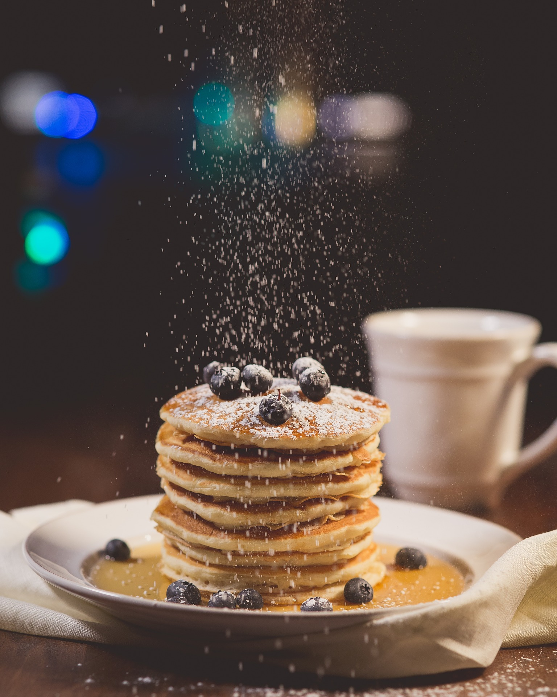

Vegan Blueberry Pancakes

Back to Home
Description
A tasty weekend breakfast getaway with a delicious stack of vegan pancakes!
You can choose to top with a powdery sugary topcoat or a dollop of butter,
or soak in maple syrup... or really add all three. Enjoy a breakfast treat with
these berry filled pancakes.
Ingredients
- 1 cup of regular flour
- 1 1/2 tbsp baking powder
- 1 cup of dairy-free milk
- 1/4 teaspoon of salt
- 1 tbsp melted coconut oil
- 1 flax egg (1 tbsp ground flax seeds mixed
in 3 tbsp water)
- 1 cup of blueberries
- 1 teaspoon of vegetable oil
Steps
- Mix the flour, baking powder, salt in a bowl.
- In a separate bowl, whisk milk, coconut oil and flax
together.
- Poour the wet ingredients into the dry, and gently
mix until combined. Do not overmix!
- Heat coconut oil in skillet over medium heat
- Pour about 1/4 cup into the skillet at a time,
and gently place blueberries onto each pancake.
- Let sit for 2-3 minutes or until bubbles form, and flip.
- Once flipped, cook for 1 minute until done.
- Repeat for all pancakes!
© Choosing Chia by Jessica Hoffman